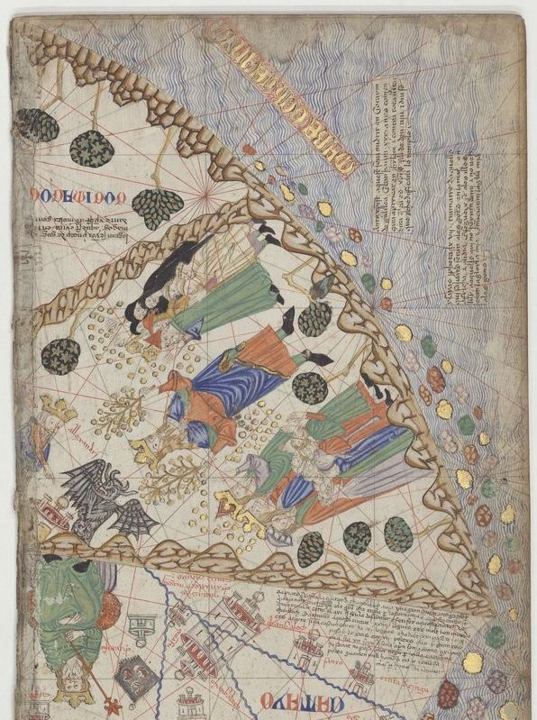
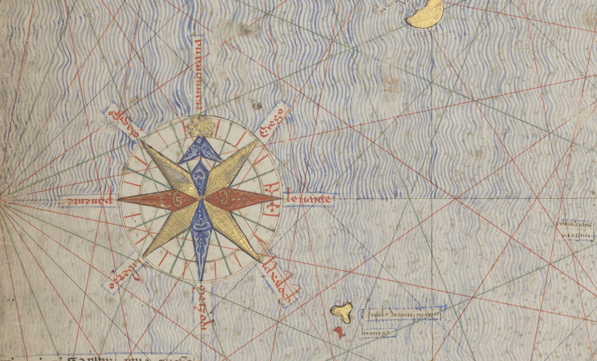
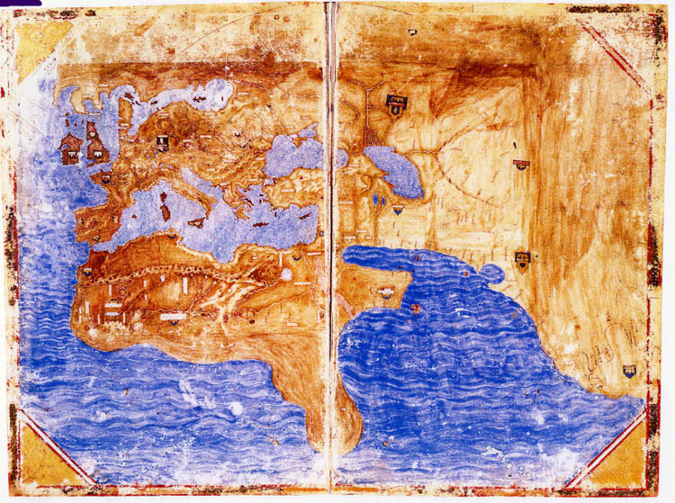

Наклонились над картой плечо с плечом
Штурман и командир.
С. А. Колбасьев. Волк (1922)
Итальянские картографы называли морские карты charta, или tabula, но современная наука говорит об этих средневековых произведениях как о «картах-портоланах». Они известны также как компасные, или румбовые, карты, поскольку на всех них изображены румбовые линии, т. е. линии, выходящие радиально из центра в направлениях ветров или румбов компаса. Сохранилось около 130 таких карт XIV и XV вв. Чаще всего они нарисованы на пергаменте и украшены рамкой и шкалой. Позже на них стали появляться одна или несколько роз ветров. Наиболее характерной чертой подобных карт является сетка румбовых линий, позволяющая штурману прокладывать курс от одной гавани к другой. Картограф проводил эти линии на пергаменте раньше, чем приступал к изображению географических контуров. В большинстве своем карты-портоланы были примерно одного размера, ограниченного площадью пергаментного листа, север на них располагался вверху. Названия подписывались черным, заглавные буквы — красным. Цвет, часто золотой и серебряный, щедро использовался и для других целей; позже на картах появляются всевозможные виньетки и флаги с изображением гербов. Названия мест на берегу всегда помещаются слева от береговой линии и под прямым углом к ней, поэтому нужно поворачивать карту, чтобы последовательно прочесть все названия вокруг какого-нибудь моря. Береговые линии — не прямые, но составлены из фрагментов геометрически правильных кривых разной длины, врезающихся в сушу и представляющих бухты. Эстуарии указываются двойными линиями, а опасные рифы — точками или крестиками.
Хотя в современной специальной литературе подобные карты иногда называют «локсодромными» (локсодром — линия, пересекающая все меридианы под одним и тем же углом, в отличие от ортодрома — линии кратчайшего расстояния), этот термин применяется к морским картам этого периода ошибочно, поскольку локсодром помогает получить точный курс только в том случае, если карта нарисована в подходящей проекции. Картометрические исследования показали, что в ранних картах проекции не использовались вообще, а потому мы сохраняем для таких карт название «портолан».
Средневековые портоланы (с 1300-го по 1500 г.) по месту происхождения можно разделить на две группы: итальянские портоланы, в основном из Генуи, Венеции и Анконы, и каталонские портоланы с Майорки и из Барселоны. До нас дошло всего несколько португальских карт, изготовленных до 1500 г., и ни одной испанской, хотя известно, что португальские картографы активно работали весь XV в., да и самые ранние из дошедших до нас работ, очевидно, являются результатом длительного развития картографического искусства. Обе группы картографов использовали один и тот же в основе своей исходный материал, тем не менее итальянские и каталонские карты различаются между собой как по виду, так и по размеру охватываемой территории. Итальянские портоланы в большинстве своем включают лишь Западную Европу и бассейн Средиземного моря, тогда как некоторые каталонские портоланы доходят на севере до Скандинавии, а на востоке иногда до Китая и могут поэтому рассматриваться как карты мира.
Как правило, такие карты мира по форме представляют собой круг, хотя из-за ограниченного размера пергаментного листа изображение на них часто занимает лишь часть круга. Круг все же можно различить, например, в очертаниях Дальнего Востока в каталонском атласе 1375 г.


Остается неясным, какой вид карты — итальянский или каталонский — появился первым. По сохранившимся немногочисленным образцам ранних карт (скажем, до середины XIV в.) сложно сделать вывод о зависимости одной их группы от второй. Очевидно, что исходный географический материал первоначально был для обеих групп общим, но к концу XIII в. или чуть раньше эволюция формы итальянских карт практически прекратилась, тогда как каталонские карты продолжали видоизменяться и позже…
Спрос на карты, в основном со стороны людей практических, таких, как моряки и торговцы, требовал повсеместного распространения карт и постоянного улучшения их качества. Каталонские морские карты, производство которых было сосредоточено на Майорке, стали считаться непременной принадлежностью штурмана, и в 1354 г. король Арагона распорядился, чтобы каждая галера имела на борту по крайней мере две морские карты. Похоже, что высокая репутация каталонских карт привела к тому, что многие итальянцы, среди них Далорто, Петр Розелли и Салват де Пилестрина (в XIV, XV и XVI вв. соответственно), ехали на Майорку с целью изучить искусство ее картографов. Многие каталонцы, в свою очередь, переехали в Италию и продолжали работать уже там.
В то время как итальянские карты могут использоваться лишь в своем непосредственном качестве — как морские карты — и за береговой линией ничего или почти ничего не показывают, каталонские карты представляют собой не только навигационные схемы. В них содержится ценная информация для моряков, торговцев, ученых и просто для любопытных и любителей географии. На каталонской карте направления обозначены дисками с изображением Полярной звезды для севера, наполовину затененной Земли (не половинки Луны) для юга, креста для востока и розетки для запада; на некоторых картах диск с крестом раскрашен в красный и желтый цвета — цвета Арагона; внутренние моря заштрихованы вертикальными волнистыми линиями; названия морей даются в цветных рамочках; используется каталанский язык или испорченная латынь.
На итальянских картах обычно изображены лишь берега Средиземного и прилегающих морей, а также европейское побережье Атлантики до Нидерландов на севере. Исключениями являются так называемый атлас Медичи работы Кариньяно и карты Пизигано и Кариньяно, которые (как мы уже видели) содержали географическую информацию и помимо той, что имела отношение к морю. Атлас Медичи, свидетельствующий к тому же о каталонском влиянии, из-за обилия и характера содержащейся в нем информации представляет в некотором смысле проблему. Он обычно датируется 1351 г. по начальной дате содержащегося в нем календаря, но вовсе не обязательно, что атлас действительно изготовлен в этом году. Интересно отметить, что на карте мира в этом атласе показана южная оконечность Африки задолго до того, как Бартоломеу Диаш и Васко да Гама обогнули ее (в 1488-м и 1497 гг. соответственно); эта часть карты, вероятно, добавлена позже.

Одна из каталонских карт легла, по всей видимости, в основу рассказа о путешествии францисканского монаха, уроженца Кастилии, имя которого не указывается. Согласно его собственному рассказу, он родился в 1304 г., а книгу написал между 1350-м и 1360 гг. Путешествие описывается примерно в таком стиле: «Отправились из города А или столицы В, поехали по дороге С, прибыли в столицу или город D, лежащий в королевстве или провинции Е, на чьем флаге изображено F». Манускрипт содержит цветные рисунки упомянутых флагов. Очевидно, что этот францисканец не совершал этого путешествия, поскольку даже те немногочисленные сведения, которые все же приводятся в его рассказе, часто имеют мало отношения к действительности и никак не могли быть получены из наблюдений. Однако описание маршрута в точности соответствует данным, содержащимся обычно на каталонских картах. Вероятно, францисканец этот совершил свое воображаемое путешествие с помощью одной из таких карт, не выходя за порог своего жилища.